2D Drawings → BIM (DXF2BIM) — User Guide¶
← Back to the User Guide · Modeller Guide · Home
Turn a set of 2D CAD drawings (.dxf) — floor plans, elevations, a roof plan and a section — into a 3D BIM
model inside the DAGeVu Modeller, and export it as IFC4 with real storeys.
It is deterministic: the same drawings and the same metadata give the same model, every time. No AI runs on your drawings — the code reads geometry and the labels you (or the drawing) state. Anything the drawing cannot tell it is listed as a gap, never guessed.
Status: preliminary. Two paths. (1) Standard sets (walls, floor slabs, roof, door and window openings, fills): proven end-to-end on the Duplex, which has a 3D answer key. (2) Structure sets drawn only in 2D (columns, footings, beams, wall panels, fans, nets, doors, trusses): worked on a real farm-shed drawing set, see A building drawn only in 2D. Anything a drawing does not state is a yellow setting: see the yellow list. Read What it does not do yet before you try your own drawings.
The idea in one picture¶
- A standard 2D set. Grid lines on the real wall axes (1, 2, 3… across; A, B, C… up, skipping I and O), dimension strings in three tiers (overall · grid-to-grid · detail), level marks, door swings, window sills.
- Metadata. Each sheet says what it is (plan of which level, which elevation face, roof, section) and the few facts geometry cannot decide (units, wall tops, door sizes from the schedule). The metadata lives inside the DXF, on its own layer, so the file stays a normal DXF any CAD program opens.
- A verdict. Before anything is built, the drawings are checked. Green = Qualifies. Red = a clickable list of exactly what is missing or inconsistent.
- Convert. One click builds the model. Every element remembers the DXF entity (handle and layer) it came from.
What a standard sheet looks like¶
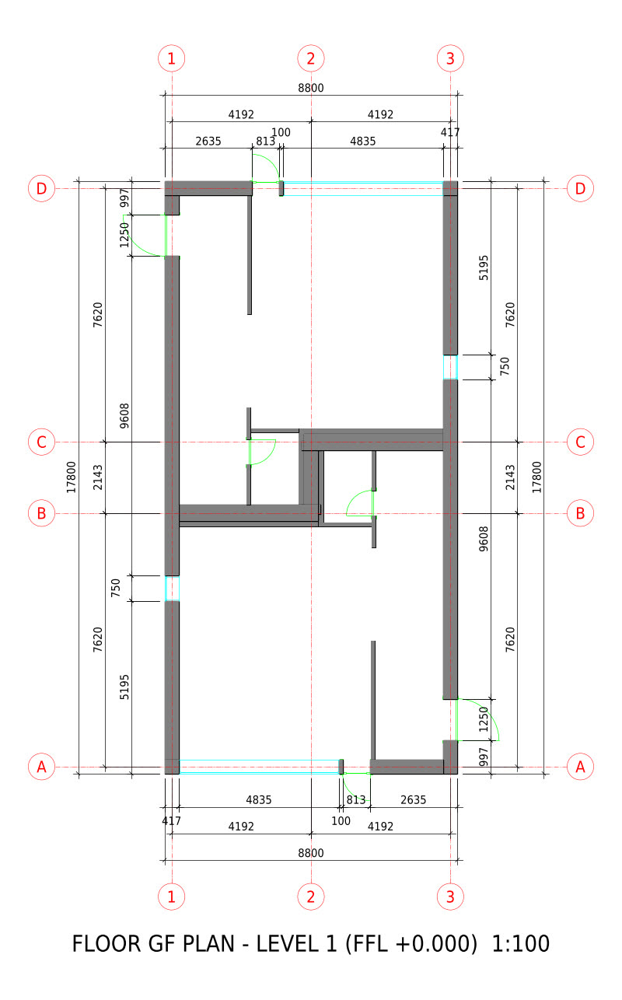
Ground floor plan of the Duplex, written from the model by the standard 2D writer. Grid bubbles at both ends; dimension strings: overall (8800 / 17800), grid-to-grid (4192 + 4192, 7620 / 2143 / 7620) and detail (walls and openings). Every dimension is a real CAD dimension measured between its two points — never typed text.
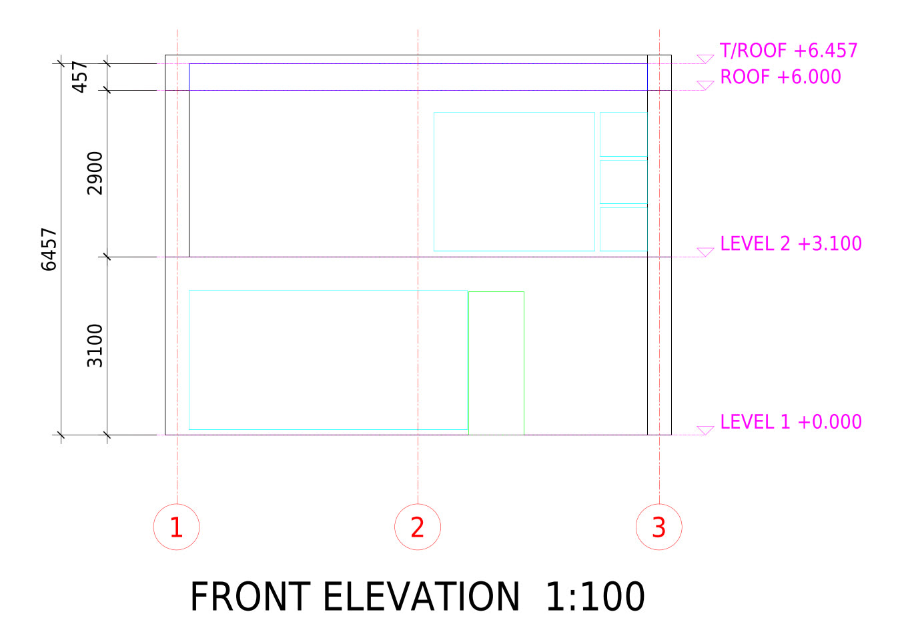 |
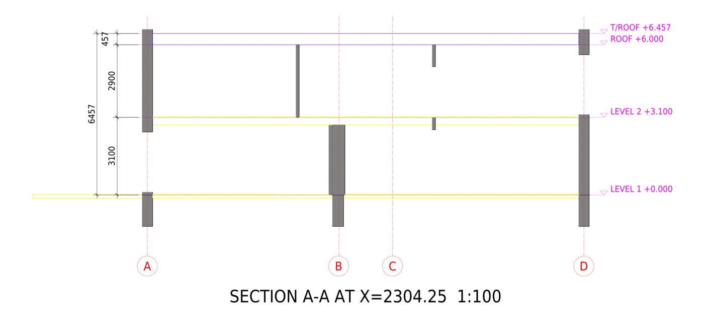 |
| Front elevation: walls and openings on that face, level datums and height dimensions. | Section: slabs and roof cut through, with their levels — this is where slab thickness comes from. |
Rules the writer follows (drafting conventions, stated as choices):
- A floor plan shows everything the cut plane passes through — cut at the storey level + 1.2 m.
- Grid lines sit on load-bearing and exterior wall axes, never snapped to a module.
- Door arcs: the hinge from the IFC door type (left/right hand), the swing side from the door leaf, the
radius = leaf width (not the frame). No hinge data → a
HINGE ?note, never a guessed arc. - Slab thickness is read from the section, not from elevations.
Step by step in the Modeller¶
Open: red1oon.github.io/bim-ootb/modeller/modeller.html (desktop browser).
1 · Open the drawings¶
📂 Open → Open 2D drawings (.dxf)… and select all sheets of the set at once (plans, elevations, roof, section). The 2D Drawings panel lists each sheet with its role; the canvas shows each sheet placed in 3D — plans at their level, elevations on their face, the section on its cut plane.
A raw set (no metadata yet) plays its arrangement as it opens: each sheet first lies where it was drawn, then moves to where its markings and yellow defaults put it, one value at a time, so you can see what each value does. Arrange in the 2D Drawings panel plays it again; Esc stops it.
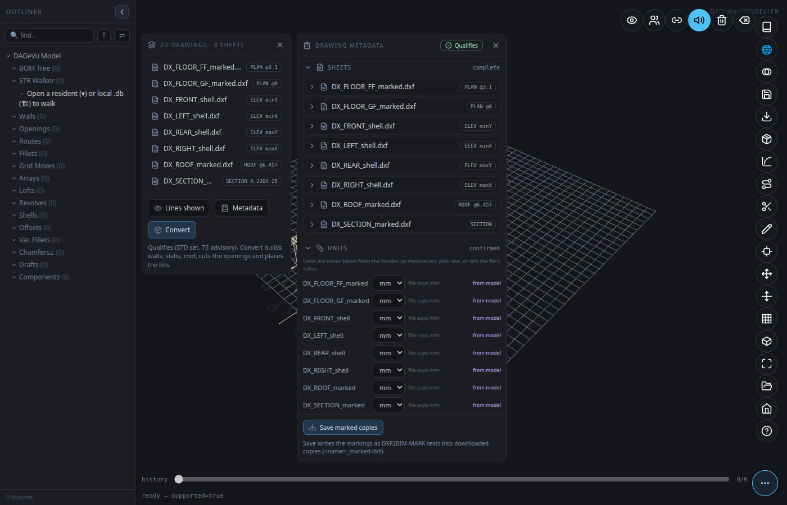
2 · Check the metadata¶
Press Metadata. The Drawing metadata panel shows, per section:
| Section | What you set | Notes |
|---|---|---|
| Sheets | role (plan / elevation / roof / section), level, face, cut | a plan's level defines a storey |
| Units | mm, m, in, ft | you confirm — the file header is shown ("file says mm") but never applied by itself |
| Layers | which layer holds walls, doors, glazing, dims, grid, levels; or ignore | templates for common layer standards |
| Tags | click an element on the canvas, pick its mark / type | e.g. a door mark that links to the schedule |
| Exclude areas | drag a box around decking, furniture, landscaping | its contents are ignored |
| Wall tops | "walls stop under the slab above", or a height per wall | interior wall heights are never visible in elevations |
| Verdict | live result | click an item to zoom to it on the drawing |
Every value shows where it came from: from file, from model, or you.
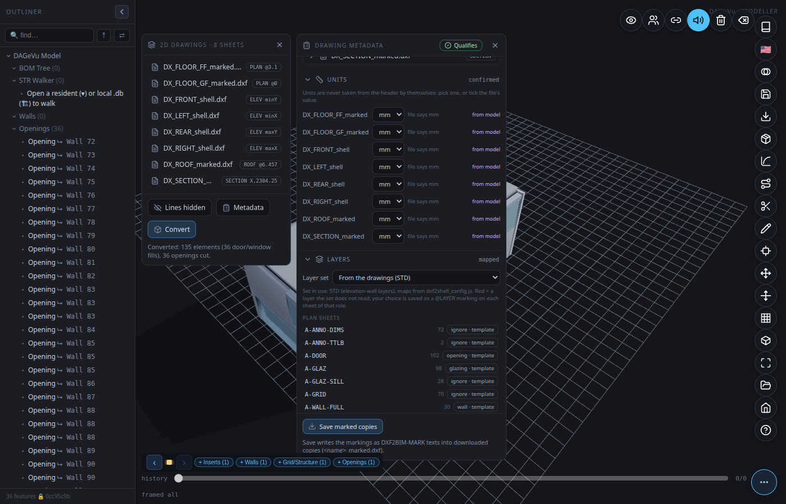
2a · See a whole sheet: Sheet¶
Open a sheet's card in the Sheets section and press Sheet. The sheet fills the canvas beside the panel, as it was drawn, with its metadata drawn on top:
- a grid line or level datum you stated is a dashed line through its own position, labelled
@GRIDX=A,@Z=3.1…; a tag sits at its point, an exclude area is drawn as its box; - values that have no place on the sheet (units, role, name, set) are listed in a markings box;
- every yellow row still open in the list is a ring at the spot the editor read it from (yellow = stated or read, orange = inferred). Tick the row in the list and its ring turns into a marking, while the view stays open.
A sheet that already has its own border and title block keeps them. A sheet without one (for example a sheet written by the model's own 2D export) gets an ISO border and title block at the paper size and scale that hold it (1:100 first, then 1:200, 1:500, 1:50, on A4 to A0); what the drawing does not say (date, owner, approver, revision) is shown in yellow as not stated, never filled in. Save SVG saves the view at paper size, Print prints it, and Markings switches the drawn metadata off for a clean copy. Wheel to zoom, drag to pan, Esc or ✕ to close; nothing you do in the view changes the drawings or the metadata.
3 · Raw drawings: fill in what is missing¶
A drawing without metadata opens with red fields and the verdict Blocked. The editor lists suggestions it can prove from the drawing (e.g. a title text "GROUND FLOOR PLAN" → role = plan) — nothing becomes metadata until you tick it.
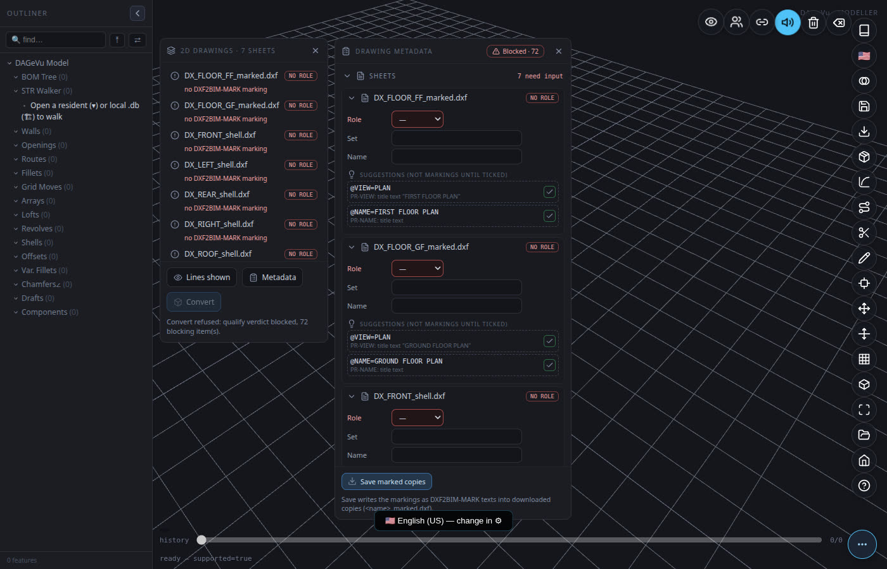
Click any verdict item to jump to it:
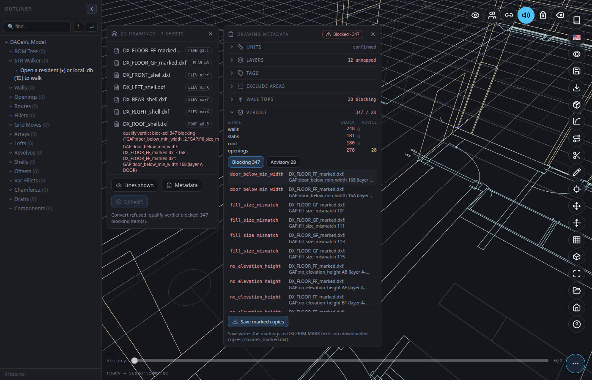
The rest of this step is written from a first-time walk through the real Modeller (2026-10-22) on the Duplex standard set with every marking removed (8 sheets, the plain drawings a CAD program would hand you). The walk reached Qualifies, and Convert built 135 elements with 36 openings cut, the same numbers as the editor's own end-to-end check. The counts below are the clicks and typed values of that walk.
3a · What yellow means¶
A yellow row is a value the editor read from the drawing (or a default it applied) that is not yours yet.
Each row names its source: PR-UNITS: file says mm, PR-GRID: grid line 190 + label 1, PR-Z: level text B5 +
level line B3. Tick one row, tick a whole group, or press Accept all; the value then shows you. When the list holds both
values the file states or a text names (stated / read) and values inferred from geometry or a convention (orange rows), Accept all is
replaced by two buttons, Accept stated + read and Accept inferred: check the orange rows first (a click on a row shows its evidence on the sheet). Ignoring a yellow default
is allowed (the default stays applied and is listed); ignoring a yellow suggestion leaves the field empty.
The list grows as you answer. On the plain Duplex set it came in four rounds (walk of 2026-10-22; the editor has since read more from the titles, so today's rounds are larger: 24 rows in round 1, 66 in round 2):
| Round | Appears after | Rows | What they are |
|---|---|---|---|
| 1 | opening the sheets | 10 | units of each sheet (8), the section's view and name (2) |
| 2 | you choose each sheet's role | 49 | grid lines on the plans and elevations, level datums (@Z) from level texts, elevation faces, the section cut |
| 3 | you type the set name once | 7 | the same set name for the other sheets |
| 4 | you type the plan levels | 5 | the horizontal axis (@HAXIS) of each elevation and the section, fitted to the plan grid |
The list opens with its count (round 2 of the plain Duplex: 66 yellow in 6 groups) and the accept buttons, above the rows. The rows come in one
group per rule (Grid lines, Level datums, Elevation faces ...), closed: the header gives the rule, its row count and the
sheets, and one tick accepts exactly that group. A grid group states its measurement in the header (for each of GRIDX /
GRIDY / GRIDH: the label range and the bay sizes in drawing units), so a badly formed grid shows before you accept it. For
the set-wide values (units, set name, roof) the header names the one value when every sheet agrees (@UNITS=mm on all 8
sheets); a sheet that disagrees is shown on its own, open, marked disagrees, and the group tick leaves it.
Check the section cut before you accept. On both standard sets walked (Duplex and a three-storey office), the
suggested @CUT was wrong: it paired two grid bubbles that carry the same letter as the section (A), so it
proposed Y,-17591.5 while the section's own title says SECTION A-A AT X=2304.25. Type the cut from the title
(X,2304.25) after you accept. Every other suggestion of the walk matched the values the model itself writes.
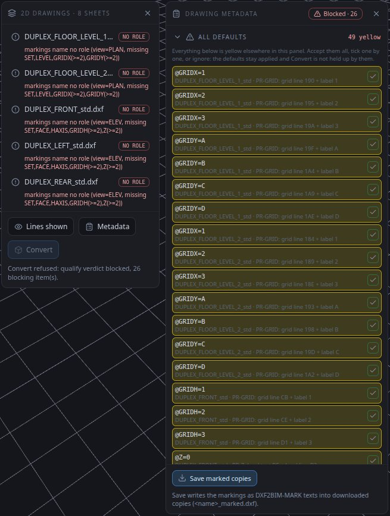
3b · The sheet facts and datums: what you state, and how¶
| Marking | What it is | Where it comes from in the walk | How you give it |
|---|---|---|---|
Role (@VIEW) |
plan, elevation, roof plan or section | suggested only when the title ends in PLAN / ELEVATION / SECTION; titles with a scale after them (FRONT ELEVATION 1:100) are not read |
pick from the list on each sheet card (7 of 8 sheets) |
@SET |
the name of the set | nothing in the drawing | type once; the other sheets get it as yellow |
@UNITS |
drawing units | the file header ($INSUNITS), shown as yellow |
accept |
@LEVEL |
a plan's storey level, metres | the plan title states it (LEVEL 2 PLAN (FFL +3.100)) but it is not read |
type on each plan and on the roof plan (3 values) |
@ROOF |
the roof top, metres | the section and every elevation draw it as the top level datum (@Z=6.457) |
type on the roof plan, each elevation and the section (6 times, the same number) |
@Z |
a level datum on an elevation or section: a height in metres at a drawing y | level texts paired with their level lines; else the heavy ground line as z 0 | accept; a second datum is typed as z plus drawing y (see the shed) |
@GRIDX / @GRIDY / @GRIDH |
which grid label sits on which line | grid lines with their labels, or dimension ticks | accept |
@FACE |
which side of the building an elevation shows | the sheet name or title (FRONT, LEFT, SOUTH...) | accept |
@HAXIS |
which plan axis runs left to right on an elevation | fitted to the plan grid after the plan levels exist | accept (round 4) |
@CUT |
where the section cuts the plan | see the warning above | type from the section title |
On the Duplex this was 7 role picks and 11 typed values (set name 1, levels 3, roof top 6, cut 1). Nothing else had to be typed for the sheets.
3c · Wall tops¶
After the sheets are complete, Wall tops lists the interior walls no elevation shows (17 on the ground floor, 27 on the first floor of the Duplex). Tick Interior walls run to the slab above once per plan; the list empties. A wall that stops lower than the slab can still be given its own top in the field beside it.
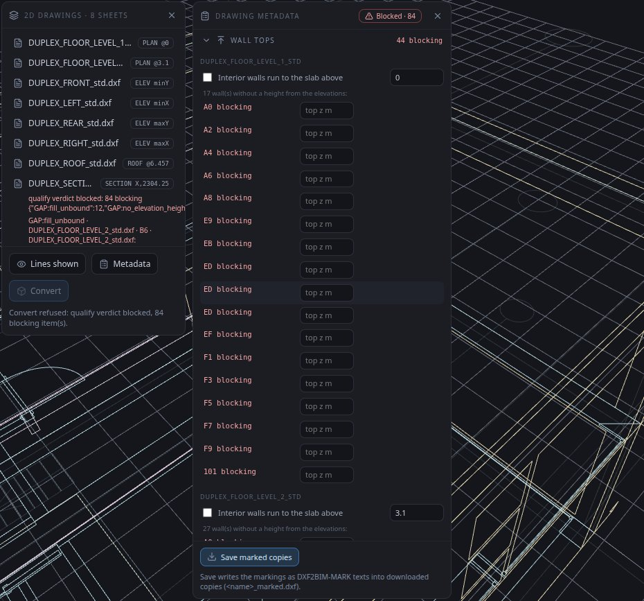
Doors and windows tagged by width¶
Type each row of the drawing's Door schedule and Window schedule once, in the Doors and windows section
(mark, width, height). The editor then proposes one yellow row per schedule row, for example
@TAG=D1 on 6 doors: every untagged door (or window) whose drawn width matches exactly that row's width. One tick
tags them all. A width that two rows share is not proposed; tag those doors one by one.
3d · Blocking items: what they mean and what to do¶
A blocking item stops Convert. An advisory item does not. The verdict lists them; click one to zoom to it. What blocked the plain Duplex after the sheets were complete, and how each was cleared:
| Item | Meaning | What to do |
|---|---|---|
QF:elev_roof_unstated, QF:elev_height_dim_missing |
an elevation has no roof top | type @ROOF on that elevation |
GAP:no_elevation_height on A-WALL-PRTN |
interior walls with no height | Wall tops (3c) |
GAP:no_elevation_height + GAP:no_host_cut on A-DOOR |
a door with no schedule mark: its height is unknown and its opening is not cut | Doors (below) |
GAP:fill_unbound |
a window with no product: the plan cannot tell three windows stacked at one position apart | Tags, picked on an elevation (below) |
QF:layer_unmapped |
a layer the set does not read | Layers: choose what it holds, or ignore |
Doors. The plain drawings carry the door widths (the drawn leaf) but no door heights: you bring them from the door schedule. In Doors, add one schedule row per door type (mark, width, height in mm, then +). Then Tag doors, click a door in the list (the canvas zooms to it), click the door's arc on the canvas, pick the mark, Tag. Click the arc itself: a click beside it, or on the leaf line, answers No door here. The Duplex has 14 doors of 4 widths: 4 schedule rows and 14 tags, about 4 clicks per door.
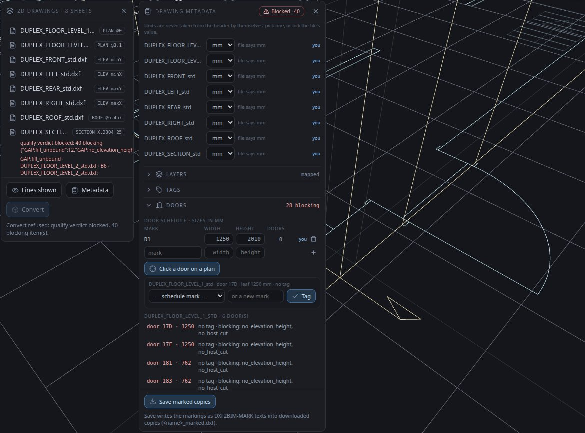
Stacked windows. In Tags, turn on the Tag tool, turn the view to face an elevation, click a window's glazing
there (the plan position and height come from the elevation), choose the product, Add. The product list holds
every window family of the library (37 on the walk) by name, without sizes: choose the one whose name matches the
drawn width (on the Duplex, the 819 mm family). A wrong family is reported as GAP:type_size_mismatch and the tag
can be removed with its bin icon.
When the last blocking item is cleared the badge reads Qualifies and Convert is enabled.
3e · How long the plain Duplex took¶
Clicks and typed values of the walk, from opening to Qualifies: 3 to open, 4 Accept all, 7 role picks, 11 typed sheet values, 2 wall-top ticks, then 83 actions for the 14 doors (16 for the schedule rows) and 41 for the 12 stacked windows. The doors and windows are about four fifths of the work. The machine time between steps was under 2 s each (a verdict re-run takes 0.2 to 0.8 s on this set).
4 · Save the marked copies¶
Save marked copies downloads <name>_marked.dxf for every sheet, with your metadata written in. The
originals are never modified. Next time you open the marked copies, everything is already filled.
5 · Convert¶
Convert is enabled only when the verdict is Qualifies. It builds walls, floor slabs, the roof, cuts the door and window openings, and places the door and window fills from the component library — as one undo step.
Two choices sit above Convert. Evidence colours (drawn / derived / assumed) shows each body by how it is
known instead of its material: drawn as is, derived (amber: computed from drawing evidence plus a stated
convention) or assumed (red: no drawing evidence for it). Firm catalogue: Load takes your office's catalogue
(made from one of your own IFC models with modeller/tools/catalogue_from_ifc.js): a wall or slab of a thickness
in the catalogue gets that thickness's most frequent material, a door its type, with the count stated. A file
that does not fit is refused with the reason, never half-loaded; Clear goes back to the reference materials.
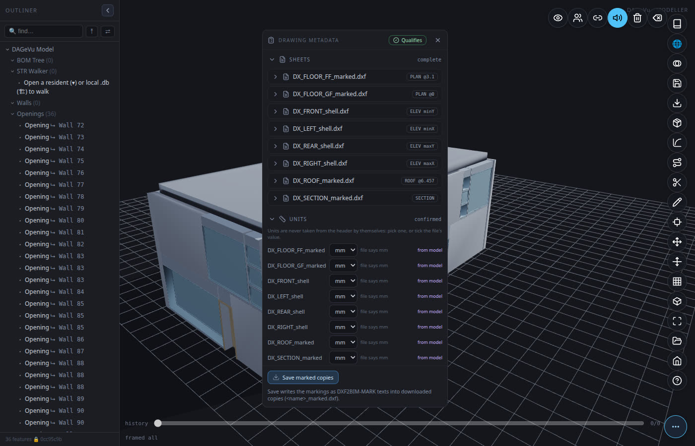
6 · Export IFC¶
Export → IFC4. The file has a proper spatial structure (Project → Site → Building → Storeys) and every element contained in its storey. On the Duplex standard set: 96 wall pieces, 2 slabs, 1 roof, 14 doors, 22 windows, 2 storeys.
Export → Viewer database (.db) builds the same IFC4 and runs it through the extractor the Viewer uses, then
downloads <name>_extracted.db. Open that file in the Viewer (Open → local .db) for 3D, 4D and 5D.
If something goes wrong¶
| What you see | Why | What to do |
|---|---|---|
| the panel says Convert failed: … (the badge still says Qualifies: the drawings are fine, the run was not) | the conversion stopped on an error; (nothing was built) or (undone) says the model is as it was before the click | Convert again; if it fails again, the message and the console line §DXF-CONVERT failed … are what to report |
| No door here: click a door's arc or leaf | the click was beside the door's swing box | click on the arc itself |
a suggested @CUT that disagrees with the section's title |
grid bubbles with the section's letter were read as the section line | type the cut from the title |
| PR-VIEW not proposed: no title text ending PLAN / ELEVATION / SECTION | the title has more text after the view word (a scale such as 1:100) |
choose the role from the list |
| Save marked copies asks to allow several downloads | one file per sheet is downloaded | allow it; the copies keep every value you stated |
The metadata, for CAD users¶
The rule: labels set what geometry cannot. The drawing's geometry gives the 3D outline. Anything the geometry
cannot decide (which product, which schedule mark, which of two same-size types) is set by a label you state
(@TAG, @LABEL, @SCHEDULE). The editor never guesses: an undecided element is left untyped and listed as a gap
with its candidates. A label sets the type; it never changes a measured size.
Metadata is plain text on the layer DXF2BIM-MARK, one marking per text entity, @KEY=value. You can type
it in any CAD program, or let the editor write it.
| Marking | Example | Meaning |
|---|---|---|
@VIEW |
@VIEW=PLAN · ELEV · ROOF · SECTION |
what the sheet is |
@LEVEL |
@LEVEL=3.1 |
plan level (m) — defines the storey |
@FACE |
@FACE=minY |
which building face an elevation shows |
@CUT |
@CUT=X,2304.25 |
where a section cuts (drawing units) |
@ROOF |
@ROOF=6.457 |
roof top level |
@UNITS |
@UNITS=mm |
drawing units |
@REGION / @EXCLUDE |
rectangles | the part of the sheet that is the view / areas to ignore |
@LAYER |
@LAYER=A-WALL,wall |
what a layer means on this sheet |
@TAG |
@TAG=door,D3 |
the mark of the element under the text |
@SCHEDULE |
@SCHEDULE=D3,door,900,2100 |
a schedule row (size of a mark) |
@WALLTOP |
@WALLTOP=3.1,slab_above · @WALLTOP=handle:99,5.695 |
interior wall heights |
@BY (suffix) |
@LEVEL=3.1 @BY=user |
who stated it: user or model; no suffix = stated in the file |
One rule governs it all: geometry is what is drawn and dimensioned; a label states only what geometry
cannot decide (which product, which schedule mark, how tall an interior wall is). A difference between the
drawing and its schedule is reported (GAP:schedule_conflict), never silently resolved.
A building drawn only in 2D: a farm shed¶
A common CAD set (here a BricsCAD drawing set saved as DXF) with no 3D model behind it: nine sheets, a floor plan, four elevations, a beam layout, a foundation plan, a truss section and a details sheet (grades, casting ratios, footing and column schedules). There is no answer key, so the check is different: every body traces to a drawn entity, a setting you stated, or a yellow default you can see. The method (units, grid from dimension ticks, level and datum) is the same as above; what differs is that the building is made of bodies read from layers you type, not of walls and slabs.
- Open the sheets. Each one lists three yellow suggestions it can prove (units from the file header, view and name from the title). Accept all also takes the grid from the dimension ticks and the ground datum from the heavy ground line.
- State the few facts only a person can (set name, plan level, the datum height, e.g. a plinth line 2 ft above
ground read from the column detail). They are written into the sheets themselves, so the settings sheets
reopen together next time. In the walk of 2026-10-22 on the nine raw sheets: the set name typed once,
@LEVEL=0typed on the three plans (floor, beam layout, foundation layout), and on each of the four elevations and the section a second level datum: z0.6096and the drawing y of the plinth line (a CAD coordinate such as-4446.6, read in the CAD program; the editor has no pick for it yet). That is 10 typed values for the datums. Each typed y lay 24.0 in (within 0.02 in) above the ground line the editor had already accepted as z 0, so the value you type is the plinth height; the y only places it. - Type the layers that mean something: column, footing, beam, wall-panel hatch, fan, net, door swing, truss
bar, door frame. Nothing else is chosen for you. In Layers this is 10 choices; two of them hold only on one
sheet (the
Dimlayer is a beam on the beam layout only, layer0is a column on the South elevation only): use the split button of that row to choose sheet by sheet. The door frame on the elevations is listed as door. Once the first body layer is chosen the set is read as a structure set and the dimension-text items of the standard check (18 on this set) no longer block. - Give heights nothing draws (footing depth, beam range) under Body heights, and leave out the areas that
would build false bodies (an expansion-joint strip). The heights are typed in metres even when the sheets are
in inches (
-1.4478for -57 in). Nothing flags the expansion joint: without the exclude box the walk built 516 bodies, the four extra being beams along the joint; with it, 512. Use Exclude areas, pick the beam layout and drag a box over the joint. - Complete the building (optional): adds the floor slab and gabled roof the drawings imply, in amber, with their thickness listed as yellow defaults.
- Convert. The whole shed lands on the canvas: 512 bodies (96 column parts: 32 columns, each with a below-grade part and a grade-to-base part; 32 footings, 35 beams, 41 wall panels, 13 fans, 3 nets, 4 doors, the truss members and plates, a slab and a roof). Each body is in its material's standard colour and carries its class, the drawing's own type label, its material, its storey and its source (sheet, handle, layer, how each size was obtained).
The details sheet. A sheet that states notes but draws no body (it has no role) is accepted as a notes sheet,
not refused. Its text is read by a fixed grammar and carried as properties, each with the cell it came from:
the concrete grade (f'c, fy) on every concrete body, each casting ratio on exactly the elements it names (footing,
column, grade beam, floor: not the beams), and the footing and column schedules, read by cell position
against their headers, on the footings and columns (the schedule has one row per kind and the bodies carry no
type name, so the properties say single schedule row). The column schedule also states a larger section
below grade (14 x 14 in): each column then continues from its footing to grade at that section, with no
setting typed (a stated @DEFAULT still wins). Not built, because the drawings give only labels: the false
ceiling and the slats of the cross-section.
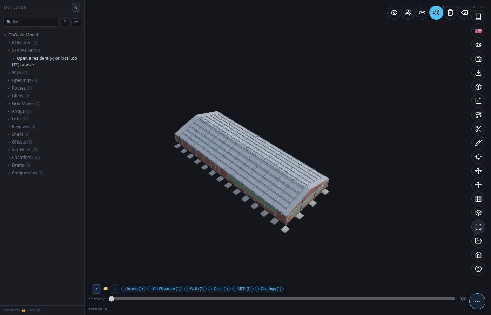
- Save and open elsewhere. Export → IFC4 writes the typed model with materials, colours and a property set
Dxf2Bim_Evidence(Provenance, SourceSheet, SourceHandle, SourceLayer, Kind, SizeBasis; thePset_prefix is reserved for buildingSMART's own sets, so the product's set does not use it) per mesh. The usual IFC → database extractor gives a database with the material name, the colour and one provenance row per mesh. The Viewer opens that database (3D in the material colours, Find, per-element information), and so does the 4D/5D page.
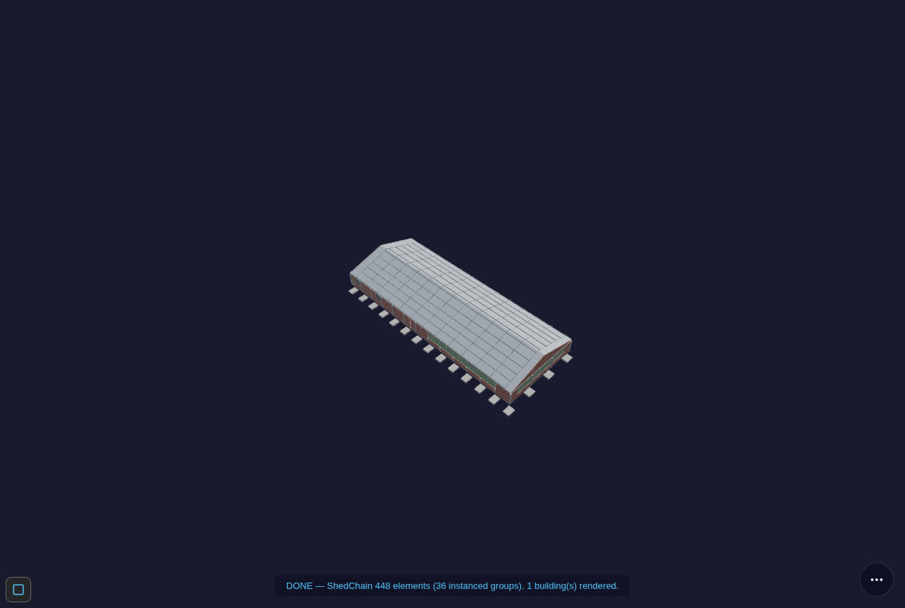
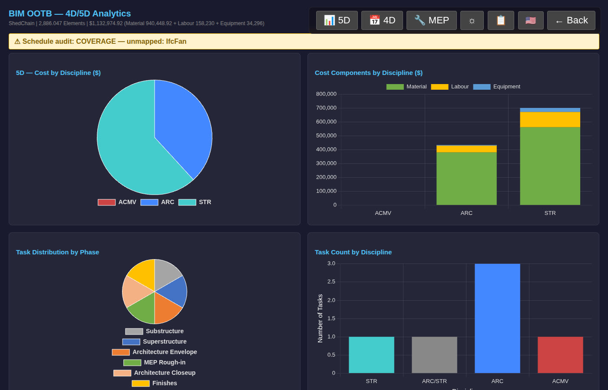
Read these numbers as what they are. The 5D cost is the Viewer's rate-based estimate, not a tender. The 4D schedule is the Viewer's generated default (phases by discipline), not the farm's real construction sequence. The repeated trusses are assumed (the drawings show one section, not its spacing), shown red under the Evidence colours option.
The IFC is checked by an independent validator. The shed's IFC4 from both writers (headless and the page) is validated with IfcOpenShell at schema level: zero statements (it was 23: every door carried derived-attribute markers and the STEP header had no author or organisation; both are fixed, and a witness puts the old defect back to prove the validator catches it). The EXPRESS WHERE rules and the buildingSMART online validation service have not been run yet. The file formats and their versions are written down in the format contract.
Closing the loop on the drawing itself. The shed's IFC was written back to a standard 2D set and compared with the original plan at 1 mm: all 32 columns, all 18 grid centre lines and the 4 doors match to under 0.02 mm, and the wall faces to 0.004 mm. This proves the reading is self-consistent; it is not a comparison with a 3D reference.
The yellow list: what you fill in, and the defaults used¶
A drawing never states everything a model needs. The yellow list gives, in one place: (A) the facts you are asked to state, (B) all 43 default settings with their value, whether it is a standard or a guess, and its basis, (C) the Farming Shed building-type values and their sources, (D) what Complete the building adds, (E) how drawn / derived / assumed evidence is shown, and (F) the items the shed drawings left open. You may ignore it: the defaults stay applied and every one is listed.
Prior art¶
What already exists, what we believe is new, what we learned from others, and what using them would cost: Prior art. Short version: other tools detect walls, doors and windows with default parameters and ask a subscription; we state the gaps, keep provenance on every body, and ask nothing but the facts in the yellow list. No head-to-head benchmark has been run.
What it does not do yet¶
Honest limits of the preliminary version:
- Basic shapes only: walls, curtain walls (a plan's
A-WALL-CURTband becomesIfcCurtainWall, priced by area), slabs, roof, openings, door/window fills, and for structure sets the bodies listed above. No stairs, railings, ramps, piles, ceilings or furniture are built from a 2D set yet (their defaults are in the yellow list, ready for the builders; no drawing used so far carries them). - Structure sets and standard sets are not mixed yet: a set that types body layers (column, beam...) and also wall/slab/opening layers is refused with that reason.
- Evaporative pads and the shed's false ceiling are labelled or drawn but not read yet. (The details sheet is read: its stated concrete grades reach the bodies they name, and its footing and column schedules give the below-grade columns.)
- Angled walls: a 2D set written from a model now cuts the windows of angled walls (Hospital 72, LTU 59 windows had no gap before), and reading such a set back finds a door's host on the angled wall's own outline. Curved walls are reported as gaps; roofs are flat outlines (pitched or curved roofs are not drawn correctly yet).
- Columns are cut and drawn, but not yet as column symbols on the grid.
- Openings above or below the plan cut (e.g. high bathroom windows) — being changed so every opening of the storey is shown from its host wall regardless of height.
- "Any DXF" is not claimed. Your drawing needs the metadata above; the editor helps you add it, the verdict tells you when it is complete.
- The component library (door/window geometry) is published: when no local copy is present, Convert loads it from the project's object storage. A window or door type the library does not hold is a blocking item, never a box.
For developers¶
The same pipeline runs in Node (BIMCompiler repo):
# standard 2D set from a model DB (+ door operations extracted from the IFC by scripts/extractIFC2DB.js)
python3 2D_Layout/python/std2d.py <model_extracted.db> --out 2D_Layout/output/STD --door-ops <door_ops.db>
node tests/dxf2bim/mark_dx_set.js std <door_ops.db> # metadata from the model (@BY=model)
DXSET=std node tests/dxf2bim/rosetta_dx_shell.js # basic shapes, checked against the model
node tests/dxf2bim/rosetta_qualify.js # the verdict for every test set
Specs: DXF2BIM spec · Basic shapes spec.
Modeller lane spec: prompts/DXF2BIM_MODELLER_LANE.md (bim-ootb).
Every check has a deliberately broken control that must fail. Code is MIT licensed.
Test drawing credit: the American Farmhouse drawings used as an independent test are by Jay Osborne (freefarmhouse.com), CC BY-SA; they are not included in the repository.
Shed example POC: how long it takes and how big it is¶
Measured 2026-10-19 on one laptop (CPU only, headless browser with software rendering, no GPU), the real nine-sheet shed set (with the details sheet), 2,943 CAD entities, about 1.05 MB of DXF in total. Times are wall-clock from the run logs; they exclude the time a person spends typing the facts in the yellow list.
| Step | Time | Output |
|---|---|---|
| Open the nine settings sheets to a verdict (Qualifies) | 2.1 s | roles, grid, 445 bodies ready (512 with Complete) |
| Convert to 3D: click to 512 bodies on the canvas | 0.23 s | 512 bodies with material colours and metadata |
| Export IFC4 in the page | 0.4 s | 1,001,552 bytes (about 1.0 MB) |
| IFC → database (the in-browser extractor) | 0.5 s | 1,118,208 bytes (1.1 MB; about 230 KB compressed) |
| Open that database in the Viewer, 3D fully rendered | 2.3 s | 512 elements |
| The same whole shed from the command line (read sheets, 512 bodies, bill, IFC4) | 0.88 s | about 198 MB of memory |
So the machine part, from an opened set of sheets to a rendered Viewer, is about five and a half seconds; the 3D itself appears in under a quarter of a second after Convert. The five-minute film is slow because it narrates and types, not because the software is.
The database holds 512 elements (about 160 KB is mesh geometry across 133 distinct shapes, about 550 KB the per-mesh provenance and notes rows (4,961 rows) with their index, the rest names, materials, colours and bounding boxes). A 1.05 MB set of drawings becomes a 1.1 MB database. (The compressed size and the split by table were measured on the equivalent page-extracted database of the film take, same pipeline.)
A caution on method: this is one machine and one building, measured by the run logs, not a benchmark; a larger building will take longer (the Hospital extraction in the Node CLI takes minutes). An earlier measurement of the command-line extractor looked slow (16 s) because every row was its own disk commit; that is fixed in the extractor (0.4 s), and the numbers above use the fixed one.